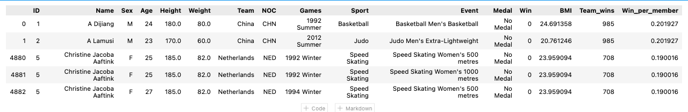

Data is an important part of the sports industry. Not only can data analytics help teams win games, but these statistics can also help improve player performance, prevent injuries and encourage fans to attend games. Through this analysis, our team seeks to determine if it is possible to predict an athlete's performance based on personal features.
"Can we use predict an athlete’s chances of winning a medal based on their physical features?" We hope to further our analysis and find interesting correlations between the athlete's physical profile and the country's performance history
Data is an important part of the sports industry. Not only can data analytics help teams win games, but these statistics can also help improve player performance, prevent injuries and encourage fans to attend games. Through this analysis, our team seeks to determine if it is possible to predict an athlete's performance based on on pertinent features, such as age, height, and nationality, and previously won medals using a Random Forest Classifier model.
The data was sourced from Kaggle from an article on Olympic Games that delves on data from 120 years of olympic history. The selected tables have data with more than 1,000 data points. The selected two tables were cleaned up using Pandas (Jupyter Notebook) and were explored using PostgreSQL (PgAdmin).
We used additional data with Olympic countries' Capitals longitude and latitude for creating an interactive map.
Original dataset contains data spanning from Athens 1896 to Rio 2016. Features listed for each athlete are:
Additional dataset contain listed data for each of the Olympic games:
First we load our dataset using pandas
import pandas as pd
athletes_data = pd.read_csv(f'{file_dir}/Raw_Data/athletes_data.csv', low_memory=False)
print('Datasset shape:', athletes_data.shape)
print('Dataset columns:', athletes_data.columns)
Datasset shape: (271116, 12)
Dataset columns: Index(['ID', 'Name', 'Sex', 'Age', 'Height', 'Weight', 'Team', 'NOC', 'Games',
'Sport', 'Event', 'Medal'], dtype='object')Using dropna method we clear all rows with no data in features columns
athletes_data_nona = athletes_data.dropna(subset=['Age', 'Height', 'Weight', 'Sex'])In addition to that we decided to drop more data that had no a lot of entries to affect dataset using groupby method combined with lamda function
athletes_data_nona.groupby('Games').filter(lambda x : len(x)>70)
athletes_sports.groupby('Sport').filter(lambda x : len(x)>100)Adding new column with corresponding to y values of future maching learning model with 0 for all NA values in and 1 for any other than NA value in 'Medal' column
medals = athletes_data['Medal'].to_list()
win=[]
for medal in medals:
if pd.isna(medal):
win.append(0)
else:
win.append(1)
athletes_data['Win'] = win
athletes_data
Adding bodey mass index for the DEA
athletes_data['BMI'] = athletes_data.apply(lambda row: row.Weight/(row.Height*row.Height/10000) , axis=1)
Team desided to use team win counts and medals per team athlete as additional data entry
acthletes_medals = athletes_data.groupby("NOC").Win.sum()
athletes_medals_df = pd.DataFrame(acthletes_medals) #create df
athletes_medals_df.reset_index(inplace=True) #reset index
athletes_medals_df.rename(columns = {'Win':'Team_wins'}, inplace = True)
Team_counts = athletes_data['NOC'].value_counts()
team_counts_df = pd.DataFrame(Team_counts)
team_counts_df.reset_index(inplace=True)
team_counts_df.rename(columns = {'NOC': 'Total_team_members', 'index':'NOC'}, inplace = True)
medals_merged = pd.merge(team_counts_df, athletes_medals_df, on='NOC', how='inner')
# calculate wins per team member
medals_merged['Win_per_member'] = medals_merged.apply(lambda row: row.Team_wins/row.Total_team_members , axis=1)
# drop total team members
medals_merged = medals_merged.drop(['Total_team_members'], axis=1)
athletes_data_merged = pd.merge(athletes_data, medals_merged, on='NOC', how='inner')
athletes_data_merged['Medal'] = athletes_data_merged['Medal'].fillna('No Medal') # fill NaNs in ' Medal' with ' No Medal
athletes_data_merged = athletes_data_merged.sort_values('ID')
athletes_data_merged.head()
The final athletes data table 
Finaly we saved file in csv format to import it into SQL database later
athletes_clean_df.to_csv('../Resources/athletes_data_clean.csv', index=False)We sorted